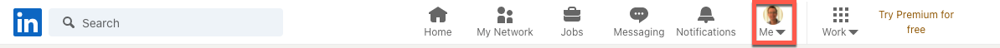
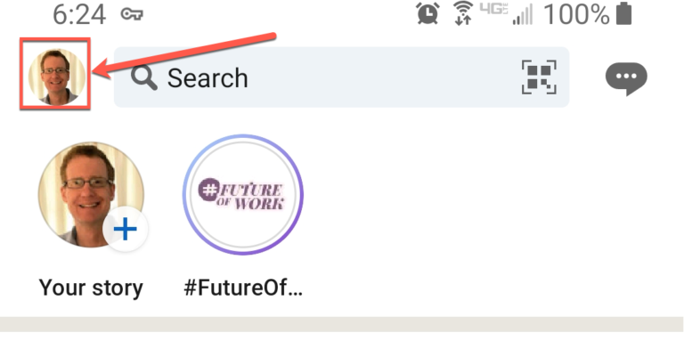

Tech writing hiring freeze
Table of Contents
I hope the title caught your attention, because if you are in the market to get hired as a technical writer, keep a watch on your calendar. In general, most companies stop hiring around the end of October (sometimes weeks earlier), and start again around mid-January. This often has to do with approved budgets for headcount, and also businesses just start hunkering down as the holidays approach.
What should I do about it?
I’m glad you asked. If you want to get into technical writing, maybe you have some past experience, have relevant skills without the experience, or just want to take a stab at it, I would recommend these action items (the other AI):
Update your resume. Add skills, any volunteer experience, a link to your portfolio website, or any new certifications related to tech or tech writing. Then format it carefully and proofread it again and again until it’s as perfect as you can get it. Remember, this is the first piece of writing your future employer may ever see. Ideally, have someone take a look at it, because they will often find mistakes you miss. Don’t take it personally, even the best make writers mistakes.
Upload your resume to LinkedIn internally. This is more complex than you might think. There are two places to do this. There is a place in settings which is only used internally to help with recommendations for jobs and connections.
In order to locate the internal upload page from their website:
Click on your picture where it says Me. Then Settings and Privacy > Data Privacy (on the left sidebar) > Job seeking preferences (also on the left sidebar) > Job application settings.
On the phone app, do this:
Click on your picture in the top left (the small one). Then…Settings > Data Privacy > Job application settings (under Job seeking preferences) > Job application settings.
You can upload your resume as a Doc, Docx, or PDF.
Upload your resume to your profile page (external facing). This can be seen by people in your network (who may have jobs available), or any recruiter or other possible employer. This is the real deal, the one people will actually see. Here are the directions to do this from LinkedIn.
Get the rest of your LinkedIn page in order. I’m not going to go into detail here, but update your intro, skills, possibly photo, about, experience, etc. Besides being an introduction to your experience and skills, this is again a writing sample, so go over it with a fine-toothed comb. Having someone else read through your profile page and your resume would be a good idea as well.
Once it’s all set, on your LinkedIn profile page, at the top, select the Open to button and choose that you are open to Finding a new job.
Then get back to work. If you’re learning new skills such as programming, get back to it. Just check your LinkedIn account from time to time (not 10 times a day) to see if you have a bite. Be careful of recruiters from outside your area who tend to be more of an annoyance, and could even hurt your chances by over submitting to companies on your behalf. If you go with a recruiter, find one that knows the business and actually has contacts in the companies they submit to.
I hope this helps you get ready before companies batten down the hatches, because winter’s on it’s way!